Put a sound on an object. SoundStage follows the camera through the animation and
renders every sound where the picture shows it: louder when it is close, on the left when it is
on the left, dropping in pitch as it passes, late when it is far away, muffled behind a
building.
One stereo file comes out. It starts exactly on the first frame, so it drops
straight onto the editor's timeline next to the rendered frames.
Based on scientific research. Every effect is a published
acoustic model, and each is checked by measurement in the rendered sound.
One frame of a drone shot through a city with 2200 sound sources; 1669 of them are in
this picture. Each light dot is a flying car that is heard directly, 940 in all; the cars behind
the towers are quieter and duller. Speaker symbols and rings mark signs, lights, crowds and
music, with their distance from the camera. Blender rendered the picture, SoundStage the
sound.
Why
The scene already knows how it sounds.
In a video editor, spatial sound is drawn by hand: a volume curve and a pan curve for every
object, a pitch bend for every pass-by, and all of it again after each camera cut. When the
animation changes, the curves are wrong.
The Blender scene holds everything those curves describe: where each object is on each
frame, where the camera is, which lens it has, what stands in between. SoundStage reads it
from there. Move the camera or retime a shot, run it again, and the sound fits the picture
again.
It follows the picture. Level, direction, pitch and timing come from the
animation, frame by frame, not from curves beside it.
It survives changes. A new camera path or a recut costs one more run, with
no automation to redraw.
It is the same every time. The same scene and the same sounds give the same
file, bit for bit.
What you hear
Ten things the scene decides for you.
The stills are from the feature video: simple scenes, one effect each, with the
setting that produces it at the lower left. Each card plays the sound of its scene as
SoundStage rendered it, best on headphones. Each effect is a model from the acoustics
literature, named under its card; the science shows how the rendered
sound is checked against it.
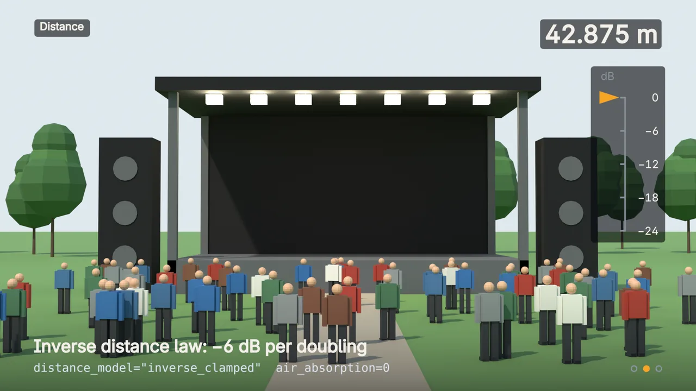
12.5 s The stage from five cameras, from 686 m down to 43 m; the hi-hats only arrive close up.
Distance
Loudness falls as a source moves away, by 6 dB for each doubling of the distance, and
far sounds lose their treble in the air. A concert 700 m away is a dull murmur; walk
up to it and it opens.
Model The inverse distance law of a point source in the open, as in OpenAL 1.1; absorption in the air after ISO 9613-1.
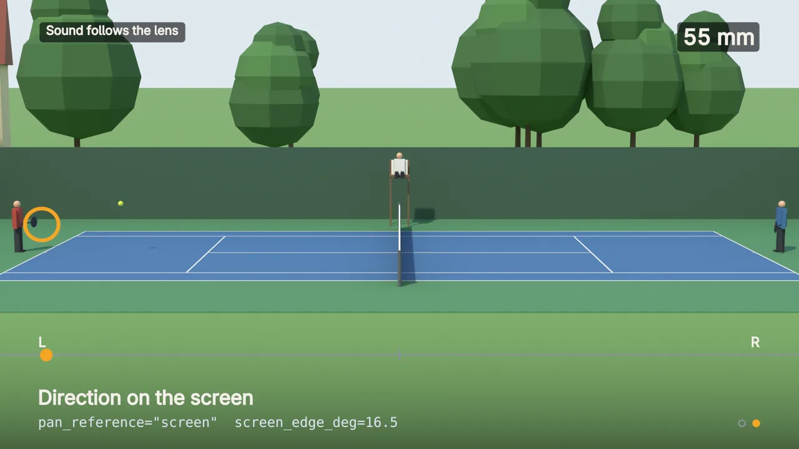
12 s A tennis rally; the zoom pushes the players to the edges of the frame, and their hits move apart.
Direction, through the lens
A sound is placed between left and right where the viewer sees its source on the screen.
Zoom in and the players move apart in the picture, and their hits move apart with
them.
Model A constant-power pan law (Pulkki 1997), taken at the source's place on a screen seen 33° wide, as in film mixing and MPEG-H screen-related remapping.
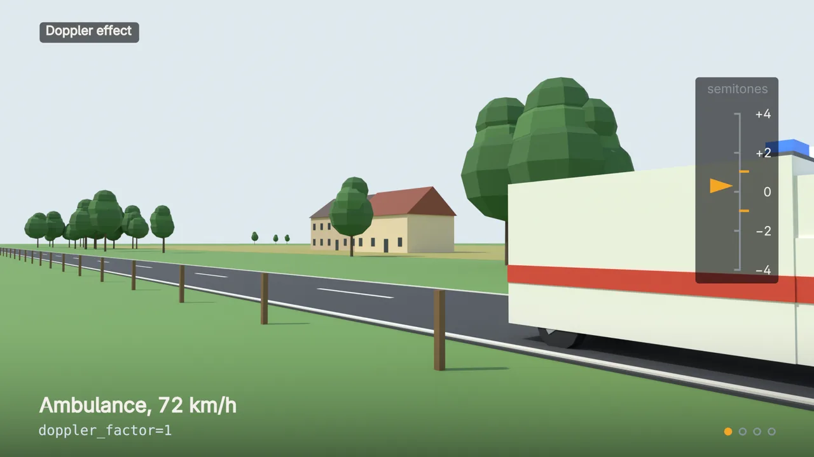
9 s The siren drops in pitch as the ambulance passes.
Doppler
An ambulance, a race car, a propeller plane: the pitch rises on the approach and drops
on the way out. It comes from the real motion of source and camera, so it is right for a
moving camera too.
Model One time-varying delay per source, driven by the geometry (Smith, Serafin, Abel and Berners 2002). Pitch and arrival time come from the same delay.
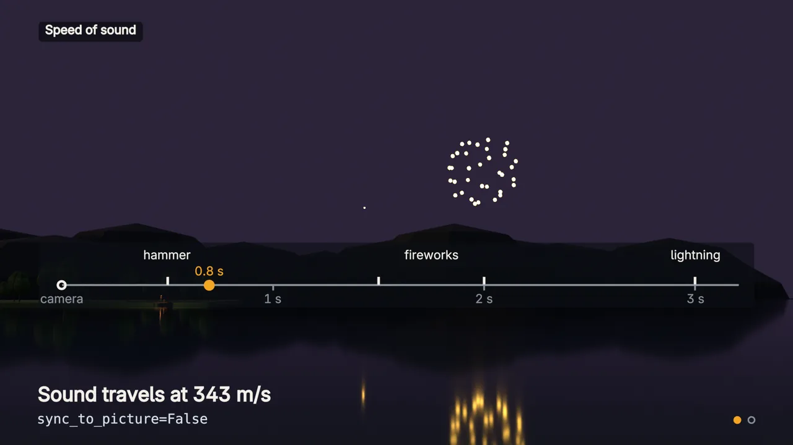
16 s A carpenter, then fireworks and lightning across a lake, each heard as late as its distance makes it.
The speed of sound
Sound travels at 343 m/s. Fireworks a kilometre away are seen first and heard three
seconds later. Where the story needs a hit on its frame, one setting pins it there.
Model The retarded time: for every sample, the moment its sound left the source, solved from the paths of source and camera.
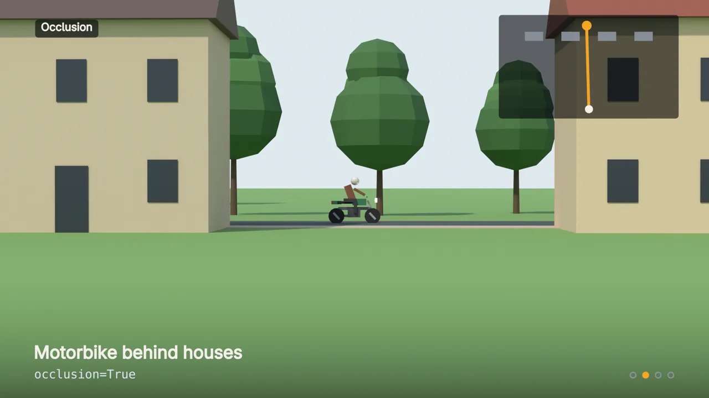
9 s A motorbike dimming behind each house and opening up in the gaps.
Occlusion
A motorbike behind a house gets quieter and duller, and its low notes bend around the
corner first. The buildings and vehicles of the scene do the blocking; there is nothing
to set up.
Model The open share of the first Fresnel zone between source and camera, per frequency band (Tsingos and Gascuel 1997).
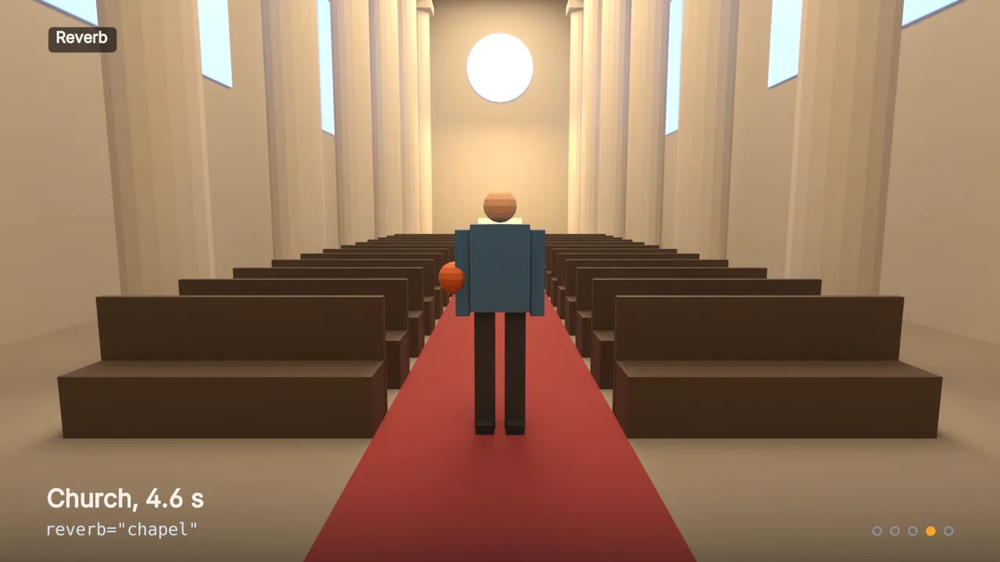
8 s A ball bounced and hands clapped in a church; the tail runs on for seconds.
Reverb
113 named environments, from a living room to a chapel to city streets, or your own
impulse response. Distant sources feed the room less than near ones, so a busy scene
stays clear.
Model The EFX environment presets known from OpenAL, rendered by convolution with impulse responses of decaying noise (Moorer 1979; Välimäki et al. 2017).
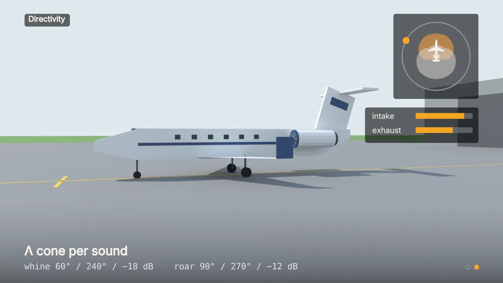
13 s The camera circles the jet: whine in front, roar behind.
Directivity
A jet is whine from the front and roar from behind. A cone per sound makes a source
sound different from each side as it turns.
Model An inner and an outer cone with a level outside, as in OpenAL 1.1 and Blender's speakers.
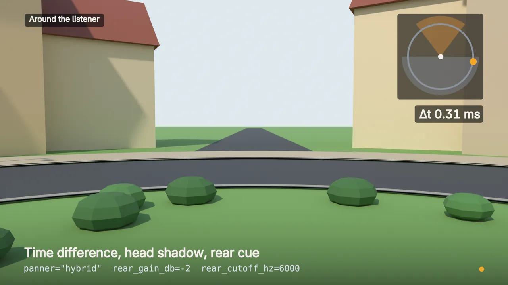
12 s A scooter leaves the picture, passes behind you and comes back.
Around the listener
A small time difference between the ears, the shadow of the head, and a cue for sounds
behind the camera: a scooter can be followed all the way around, and out of the
picture.
Model Woodworth's time difference for a spherical head and the head-shadow filter of Brown and Duda (1998).
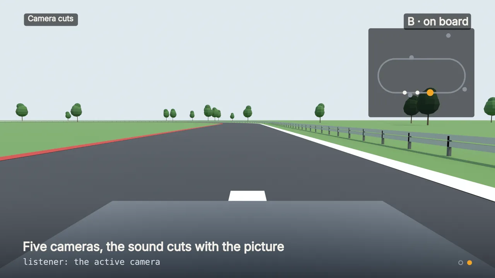
15 s Three race cars, five cameras; each shot has its own sound, most of all on board.
Camera cuts
When the picture cuts to another camera, the sound cuts with it: the new level and side
at once, with no click and no pitch glide.
Model At a cut the delay jumps. The engine switches to the new delay with a short crossfade instead of sweeping the pitch across the jump.
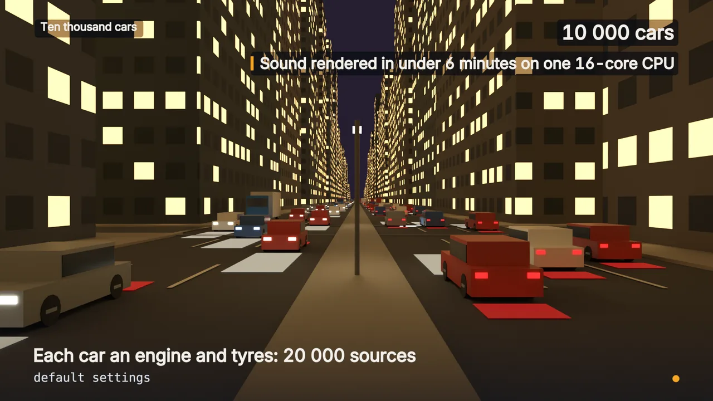
30 s A whole city from above, turning into single cars passing by.
Thousands of sources
Ten thousand cars, each with an engine and tyres. The sound of this 30-second shot
rendered in 3 min 12 s on one 16-core CPU: the nearest cars in full detail, the
rest as one far field.
Model The loudest sources of each group run the full chain, the rest share a far field; sources below an error budget are skipped.
How to use it
Three ways in, one result.
SoundStage is a command-line tool, not an add-on. You say in Blender which object
makes which sound; two commands turn the scene into a WAV. The .blend file is only read.
Blender sceneobjects, camera, sounds
bakeheadless Blender writes the paths of camera and sources, and what hides them
renderthe engine computes every source for every sample
stereo WAVframe 1 is sample 0
1
By hand, in Blender
No scripts. Blender's own Speaker objects are the sources, and the scene's camera is the
microphone.
Add → Speaker, and parent it to the thing that makes the sound.
Open a sound file on it. Volume, pitch, distance and cone are the speaker's own
settings.
Animate as usual. If timeline markers switch between cameras, the sound cuts with the
picture.
Bake and render, then put the WAV on the editor's timeline at the first frame.
A speaker plays its file once at each sound strip. For a loop, such as an
engine, add one custom property to the speaker.
Speakers in detail
# read the scene: camera, speakers, what hides them
soundstage bake shot.blend --out audio/bake
# render the mix, here in the reverb of a street
soundstage render audio/bake/scene.json \
-o audio/shot.wav --set reverb=city_streets
2
In the script that builds the scene
If Python scripts generate your scenes, tag the sounds in the same scripts: one line per
sound. The tags are saved with the scene, so rebuilding the scene rebuilds its sound.
For an existing .blend, the same lines go into a separate file that is applied at bake
time, and the .blend stays untouched.
from soundstage.blender import tag
# an engine loop at the rear of the ship
tag.add_sound(ship, "engine_hum.wav", ref_distance=20,
offset=(0, -12, 0), group="engines")
# a beacon that beeps every two seconds
tag.add_sound(beacon, "beep.wav", mode="once",
frame=list(range(1, 601, 60)))
# a crate that hits the ground on frame 180
tag.add_sound(crate, "impact.wav", mode="once", frame=180,
sync_to_picture=True)
3
With a coding agent
The repository has a step-by-step guide written for coding agents such as Claude Code.
The agent scans the shot for its cameras and for what moves, writes the tagging file,
bakes and renders.
An agent cannot listen, so every render comes with numbers and a picture: loudness and
true peak, and each source's distance, level, direction and pitch over the frames. Your
ears make the final call.
# what you ask
Add sound to shots/harbour.blend with SoundStage.
Follow docs/agent-guide.md. My samples are in
audio/samples.
# what the agent runs first
soundstage scan shots/harbour.blend --out audio/scan.json
What you get
A file for the timeline, and the means to check it.
The mix. A 48 kHz stereo WAV whose first sample is the first frame.
Made for DaVinci Resolve; any editor that imports a WAV will do.
Stems. One file per group of sources (engines, ambience, voices of the
city) and one for the reverb, to balance in Fairlight or another mixer.
A loudness report. Integrated loudness, loudness range and true peak;
normalization to a target and a true-peak limiter if you want them.
A plot of every source. Distance, level, direction, delay and pitch
over the frames, to see at a glance why something sounds the way it does.
A preview. An MP4 of the mix on the rendered frames, for a quick sync
check before the edit.
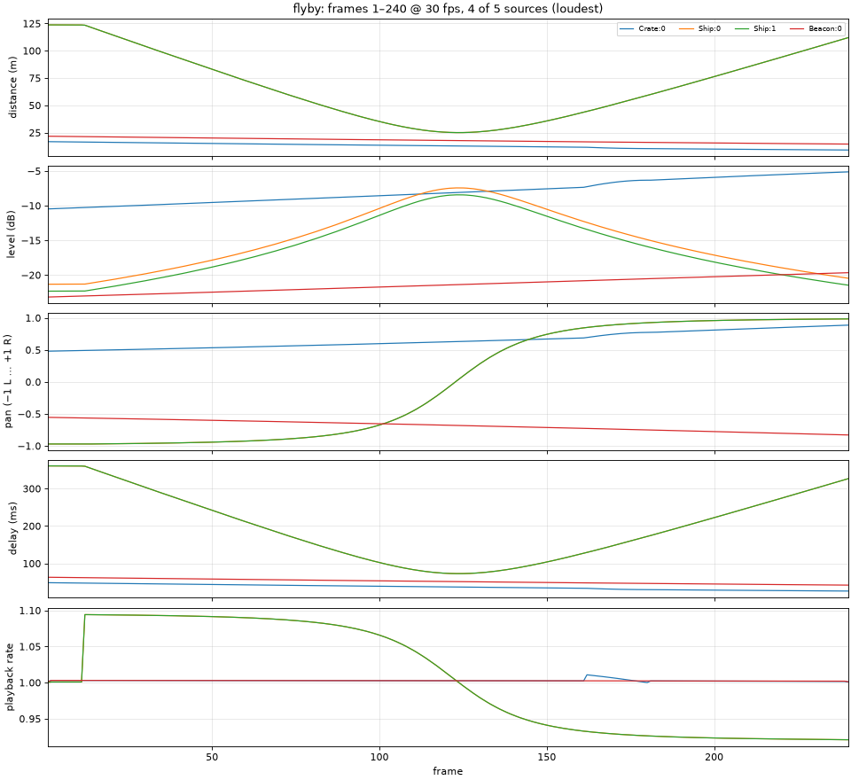
The plot of the example scene: a ship passes from left to right half way through
the shot, and its pitch drops from 1.09 to 0.92 of the original.
How long it takes
For a 60-second shot on a 16-core desktop CPU. No GPU, no display and no audio
device are needed, so it also runs on a render node.
16 s10 sources bake 11 s, render 5 s
68 s100 sources bake 45 s, render 23 s
10 min1000 sources bake 6.5 min, render 3.4 min
28 min10 000 sources bake 25 min, render 2.9 min
Up to 1000 sources, every source runs the full chain; the 10 000 are flying
cars with the nearest in full detail and the rest as a far field, which is the default.
Measured, with the scenes and scripts to repeat it, in the
README.
The science
Built on published acoustics, checked on the rendered sound.
You need none of this to use SoundStage. It is the reason the result can be
trusted: every effect is a model from the acoustics and audio literature, and each one is
measured in the audio the engine renders, against an answer known from geometry, a standard or
a preset.
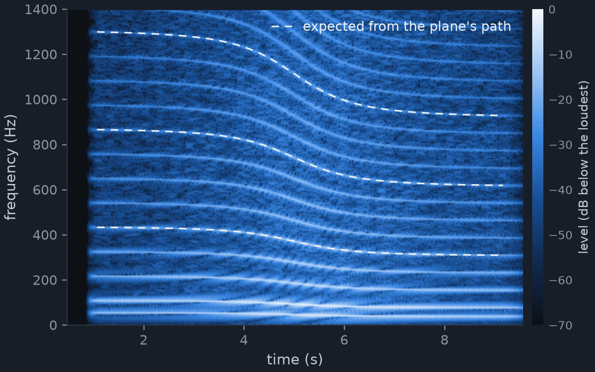
Frequency over time: a plane flies past
Each bright line is one harmonic of a propeller, in the sound rendered for a plane that
passes the camera at 216 km/h, 80 m away. On the approach every harmonic is heard
20 % higher than the plane emits it, on the way out 14 % lower, and the bend in
between is the moment it passes.
The dashed curves are not measured. They are computed from the plane's baked path and
the speed of sound alone, and the rendered harmonics lie on them.
Doppler as a time-varying delay: J. O. Smith, S. Serafin, J. Abel, D. Berners,
“Doppler Simulation and the Leslie”, DAFx 2002.
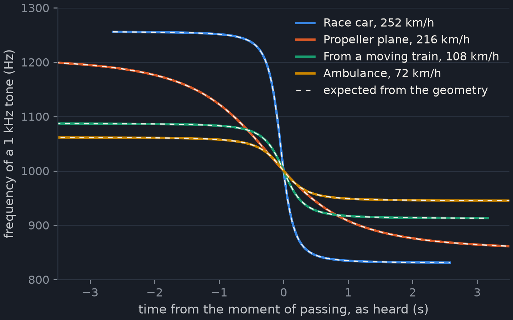
Pitch follows the motion
A 1 kHz test tone rides on four vehicles. Its frequency in the render (coloured)
stays within 0.11 % of the frequency computed from the positions (dashed): a fast,
close pass snaps, a distant one glides.
Source Smith, Serafin, Abel and Berners 2002
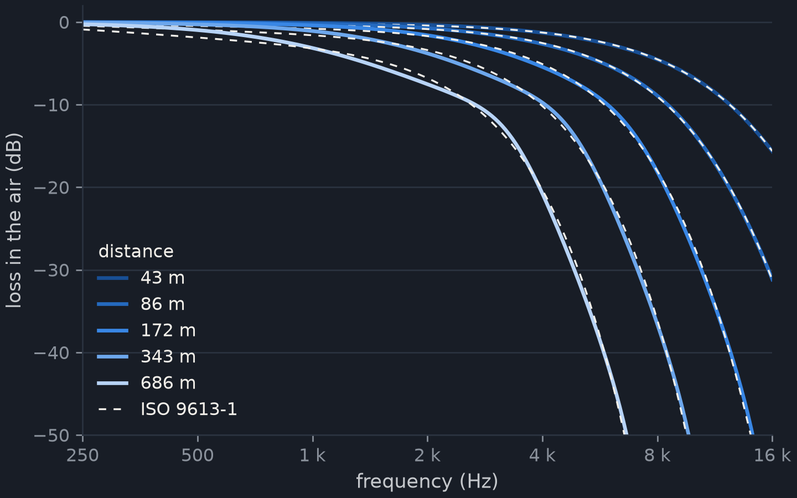
Air takes the treble
ISO 9613-1 gives the loss per metre of air for every frequency, temperature and
humidity. The engine's filter (blue) follows the standard (dashed) within 1.3 dB, down
to a loss of 50 dB, at every distance of the concert scene.
Source ISO 9613-1:1993, at 20 °C and 50 % humidity
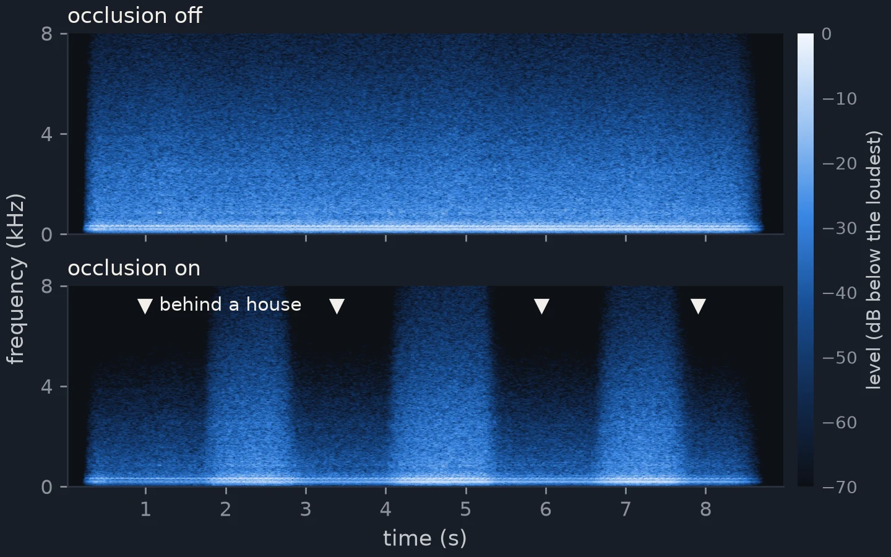
A house in the way
The same motorbike, with occlusion off and on. Behind each house the treble goes first
and the low notes bend around the corner: 12 dB less at 250 Hz, 21 dB less
at 4 kHz, as the open share of the sound path predicts.
Source Tsingos and Gascuel 1997; Kapralos, Jenkin and Milios 2007
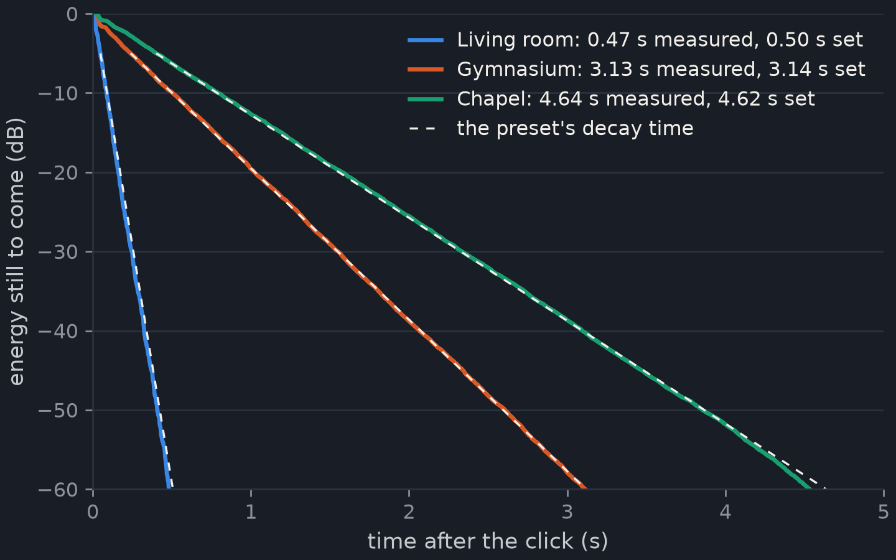
Rooms decay as set
A click in three rooms, and the energy of the reverb that is still to come. Each room
falls by 60 dB in the time its preset names: a living room in half a second, a chapel
in 4.6 seconds.
Source Moorer 1979; Välimäki et al. 2017; EFX presets of OpenAL Soft
22model pages: formulas, choices, alternatives and limits
20experiments, each with a script that reproduces its numbers
475checks on the rendered sound of the feature video
227automated tests, 32 of them through Blender
Measured against the known answer
An agent cannot listen, and ears disagree. So each scene of the feature video
carries a test sound whose right answer is known beforehand, and the rendered file is measured
against it.
What is measured in the render
Known answer
Measured
A hammer blow 171.5 m away arrives after its framedistance / 343 m/s
500.00 ms
500.09 ms
Level at 686 m against 43 m, four doublingsinverse distance law
−24.08 dB
−24.15 dB
Loss in the air at 686 m, octave around 8 kHzISO 9613-1
−48.8 dB
−48.6 dB
A 1 kHz tone on an ambulance at 72 km/h, approachinggeometry
1061.6 Hz
1061.6 Hz
The same tone, leavinggeometry
945.3 Hz
945.2 Hz
A motorbike behind a house, at 1 kHzopen share of the Fresnel zone
−13.6 dB
−13.6 dB
Reverb decay of the chapelthe preset's decay time
4.62 s
4.64 s
Reverb against direct sound, walking from 3.5 m to 16 mthe send's distance law
−12.80 dB
−12.80 dB
Lead of the near ear, source at the sideWoodworth's formula
0.321 ms
0.318 ms
A source behind the camera, at 6 kHzrear cue
−4.72 dB
−4.71 dB
From the checks of the feature video
(examples/showcase);
the charts above are drawn from the same renders by
one script.
The loudness meter reads within 0.06 LU of the EBU test values and of ffmpeg's EBU R 128 meter.
Where the models come from
Motion and delay
J. O. Smith, S. Serafin, J. Abel, D. Berners, “Doppler Simulation and the Leslie”, DAFx 2002
O. Niemitalo, “Polynomial Interpolators for High-Quality Resampling of Oversampled Audio”, 2001
J. O. Smith, “Digital Audio Resampling”, after Smith and Gossett, ICASSP 1984
Distance and air
ISO 9613-1:1993, “Attenuation of sound during propagation outdoors, part 1: Calculation of the absorption of sound by the atmosphere”
OpenAL 1.1 Specification and Reference, 2005
Direction and the head
V. Pulkki, “Virtual Sound Source Positioning Using Vector Base Amplitude Panning”, J. Audio Eng. Soc. 45(6), 1997
C. P. Brown, R. O. Duda, “A Structural Model for Binaural Sound Synthesis”, IEEE Trans. Speech and Audio Processing 6(5), 1998
R. S. Woodworth, Experimental Psychology, 1938
Occlusion
N. Tsingos, J.-D. Gascuel, “Soundtracks for Computer Animation: Sound Rendering in Dynamic Environments with Occlusions”, Graphics Interface 1997
B. Kapralos, M. Jenkin, E. Milios, “Diffraction Modeling for Interactive Virtual Acoustical Environments”, GRAPP 2007
Reverb
J. A. Moorer, “About This Reverberation Business”, Computer Music Journal 3(2), 1979
V. Välimäki, B. Holm-Rasmussen, B. Alary, H.-M. Lehtonen, “Late Reverberation Synthesis Using Filtered Velvet Noise”, Applied Sciences 7(5), 2017
R. Albrecht, T. Lokki, “Adjusting the perceived distance of virtual speech sources by modifying binaural room impulse responses”, ICAD 2013
Filters, loops and loudness
V. Zavalishin, “The Art of VA Filter Design”, 2020
M. Fink, M. Holters, U. Zölzer, “Signal-Matched Power-Complementary Cross-Fading and Dry-Wet Mixing”, DAFx 2016
ITU-R BS.1770-4, 2015; EBU R 128 with Tech 3341 and 3342
Every model has a page with its formulas, the alternatives that were considered
and its limits: research.
All sources, with open copies where they exist:
papers and standards.
In production
Two animations it was built for.
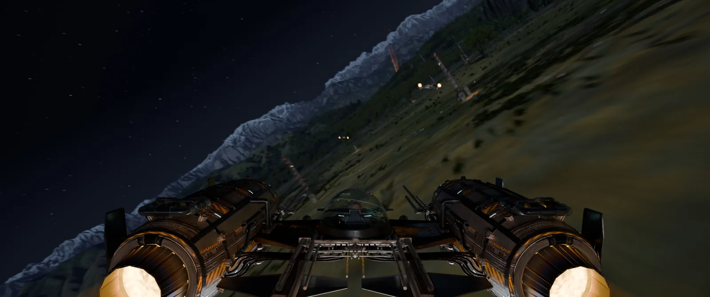
A race across a swamp: six racers at 612 km/h, half the speed of sound, over
eleven shots. Each whine arrives 3 times higher than it leaves.
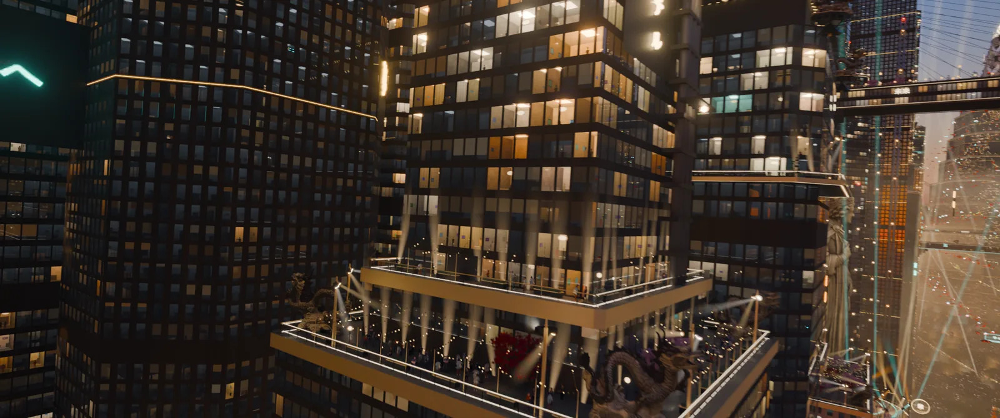
Music on the terraces of a city of flying cars: the drone hears each party as it
comes near, and loses it behind the next tower.
Get started
Start with the example.
Needs Linux, Python 3.12 or newer and Blender 5 on the PATH; ffmpeg
for previews.
out/flyby/mix.wav is eight seconds of a ship passing from left to right, a beacon
beeping on the left and a crate hitting the ground on the right, in the reverb of a city.
Only the tool, without the examples: pip install soundstage
(PyPI).
Then, your own shot. Usage: samples, speakers and tags, baking, rendering, importing into Resolve. Command line: every command and option.
Good to know.
The output is stereo. Binaural and ambisonic output, animated parameters and random
variation of one-shots are on the
roadmap, not in the tool.